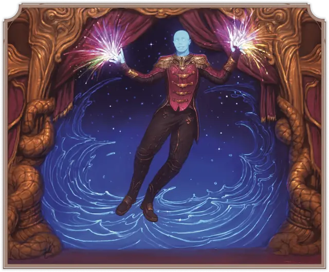

Маген-морочник
Virvos Magen
Средний Конструкт, без мировоззрения

Класс Защиты 21 Инициатива +3 (13)
Хиты 110 (17к8 + 34)
Скорость 30 футов, Полёта 20 футов (парит)
| мод | спас | ||
|---|---|---|---|
| СИЛ | 12 | +1 | +1 |
| ЛОВ | 10 | +0 | +0 |
| ТЕЛ | 14 | +2 | +2 |
| мод | спас | ||
|---|---|---|---|
| ИНТ | 10 | +0 | +0 |
| МДР | 10 | +0 | +0 |
| ХАР | 16 | +3 | +3 |
Иммунитеты Психический, Яд; Испуганный, Истощение, Оглохший, Окаменевший, Ослеплённый, Отравленный, Очарованный, Парализованный
Чувства пассивное Восприятие 16
Языки знает Общий плюс два других языка, но не говорит
Опасность 6 (2 300 опыта; БВ +3)
Особенности
Распад. Если маген умирает, он распадается в пыль, роняя всё, что он носил или нёс.
Сопротивление магии. Маген совершает с Преимуществом спасброски от заклинаний и прочих магических эффектов.
Действия
Мультиатака. Маген совершает две атаки Психическим взрывом.
Психический взрыв. Бросок рукопашной или дальнобойной атаки: +6, досягаемость 5 фт. или дистанция 60 фт. Попадание: 21 (6к6) Психического урона.
Сотворение заклинаний. Маген-морочник сотворяет одно из следующих заклинаний, не нуждаясь в Материальных компонентах (заклинательная характеристика — Харизма, Сл спасброска заклинаний 14):
Неограниченно: Малая иллюзия, Пляшущие огоньки
1/день каждое: Гипнотический узор, Образ
Бонус мастерства +3
Среда обитания Любая
Сокровища Магические
Магены
Сотворённые из магии универсальные слуги
Магены — это человекоподобные существа, созданные при помощи магии и без колебаний исполняющие приказы своих создателей. Тела магенов состоят из чистой магической энергии, но вполне материальны. Кровь их напоминает ртуть, а после гибели они рассыпаются в прах.
Магены-морочники часто выступают на пышных приёмах, где с помощью магии создают чарующую атмосферу или развлекают гостей приятными иллюзиями.